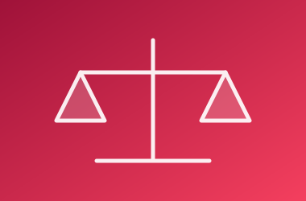
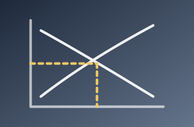

Enter Here
Edexcel Economics
Home
Theme 3
Exam technique
Downloads
Edexcel A-Level Economics
Theme 3
Exam technique
Ch 17: Business growth
Ch 18: Revenues, costs, profits and objectives
Ch 19: Market structure: perfect competition and monopoly
Ch 20: Market structure: monopolistic competition and oligopoly
Ch 21: Pricing strategies and contestable markets
Ch 22: The labour market
Ch 23: Government intervention to promote competition
Command words and mark allocation
Chain of reasoning

Evaluation and judgement
Structuring a 25-mark essay

Diagrams that earn marks
Data response and quantitative skills